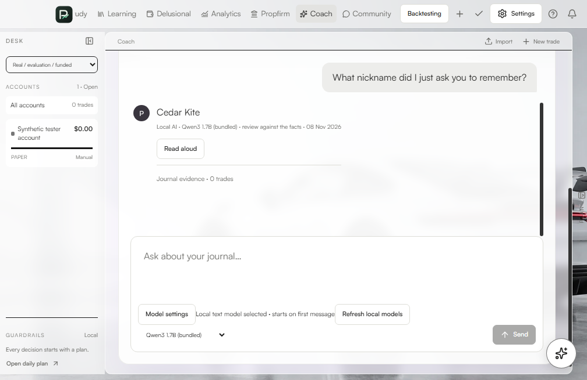

Windows 11 or later · x64
Install on Windows
One Setup app installs Journal, ChartVeil, and the offline model for your Windows account. In Settings → System → About, check that System type shows an x64-based processor.
Download Windows SetupInstall in three steps
- Open Proffitability-Journal-Windows-x64-Setup.exe from Downloads.
- Follow Setup. It installs under your Windows account.
- Open PROFFITABILITY JOURNAL or ChartVeil from Start.
This tester beta has an unsigned Windows installer. If Windows shows a publisher warning, verify the file came from the linked GitHub release and compare its checksum with the one on that release.

First launch
Open Coach and send a message to load the model. Follow the ChartVeil guide for Chrome and optional TradingView Desktop setup.